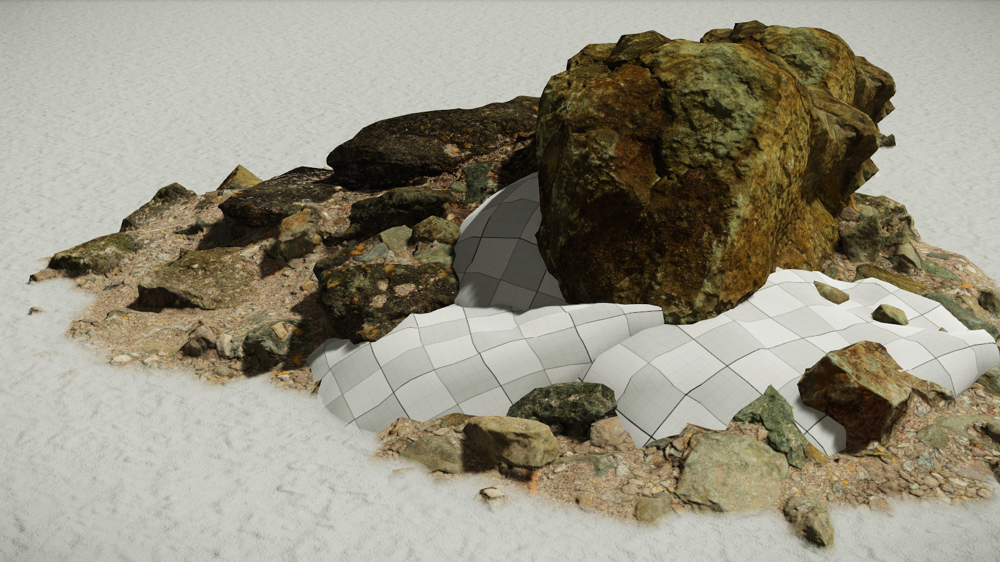
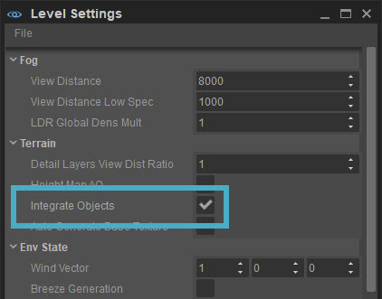
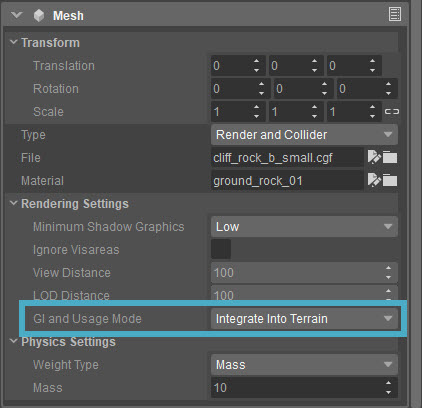

Обзор
В CRYENGINE вы можете помечать объекты с помощью компонента Mesh, чтобы они стали частью меша ландшафта. Это значительно расширяет возможности существующих инструментов редактирования ландшафта и, таким образом, обеспечивает гораздо более высокий уровень реализма, нависающие материалы и, следовательно, гораздо больший уровень гибкости.

Сетки объектов можно копировать. в сетку карты высот на ранней стадии и стать частью сетки ландшафта, которая поддерживает большинство свойств карты высот, например, 3D-материалы ландшафта.
Это работает только для объектов с прикрепленным компонентом сетки, то есть для пустого объекта, к которому вы добавляете компонент сетки, или для объекта статической сетки.
Чтобы активировать эту функцию, включите Интегрировать объекты вариант под Местность раздел Настройки уровня.

Теперь идите в Свойства организации и установить GI и режим использования чтобы Интеграция в Terrain.

Консольные переменные
CVar/Команда | Описание | Комментарий и примеры |
|---|---|---|
| e_TerrainIntegrateObjectsMaxVerticesNum | Предварительно выделяет определенное количество вершин, которые будут использоваться для интеграции объекта в ландшафт (на каждый сектор ландшафта). 0 — полностью отключает функцию | По умолчанию — 30 000 вершин. |